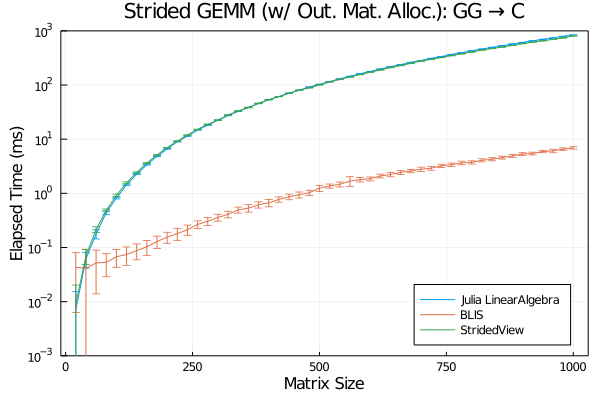
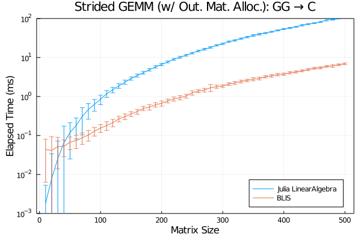

Generic-Strided Performance
Column-major matrix-matrix products (usual case) are handled with BLAS libraries in LinearAlgebra. Common options here include:
- OpenBLAS (default)
- MKL (MKL.jl)
Comparison of BLIS against other popular BLAS vendors is available in this section of BLIS documents. This short article, instead, lists performance benchmarks of generic-strided matrix-matrix multiplications which is not supported by BLAS thus handled with plain loops in LinearAlgebra. Strided.jl which provides sophisticated tailoring of all kinds of strided arrays is also included in this test.
Linux, AVX512
- OS: CentOS 7
- Processor: Intel(R) Xeon(R) Platinum 8260
- FP Pipeline: 2 AVX512 pipelines
- OpenMP Thread Used: 4

macOS, AVX2
- OS: macOS 10.15.7
- Processor: Intel(R) Core(R) i5 8259U
- FP Pipeline: AVX2 pipelines
- OpenMP Thread Used: 4
